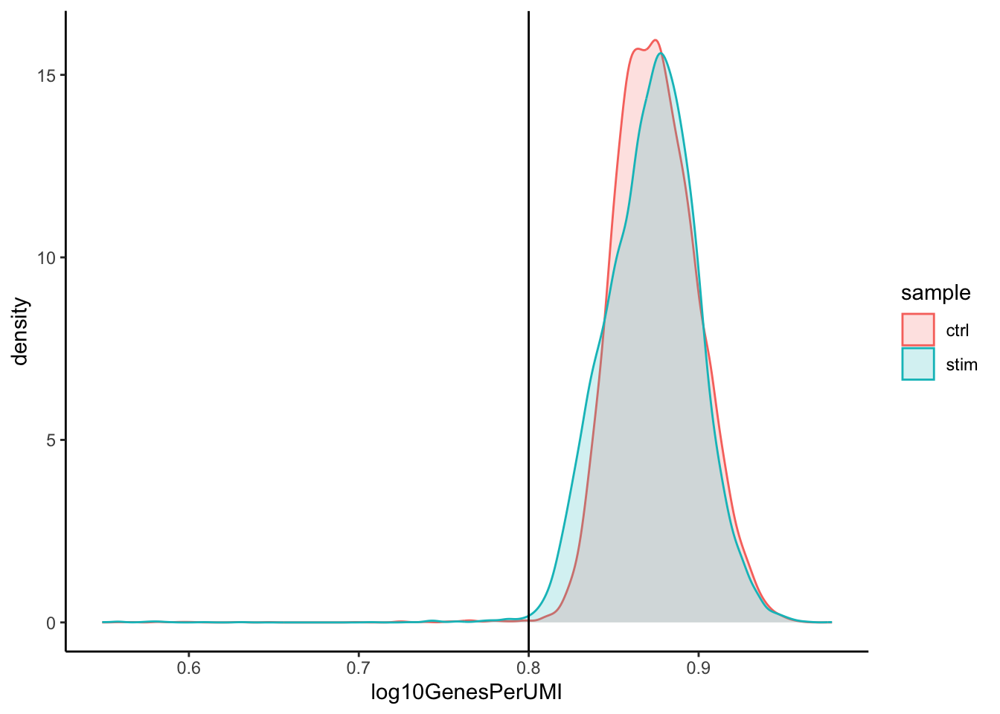
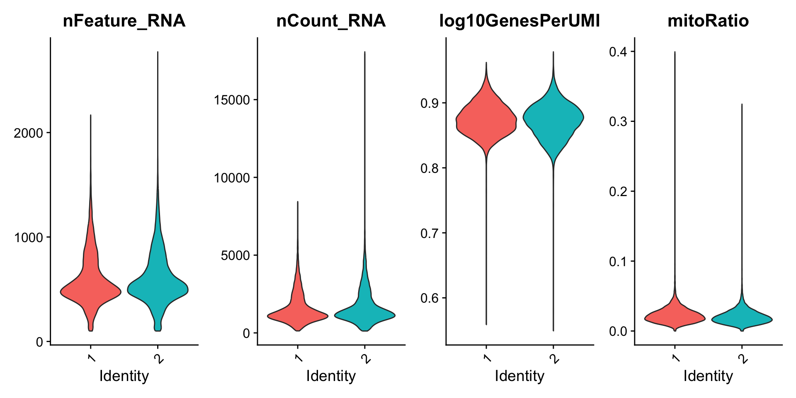
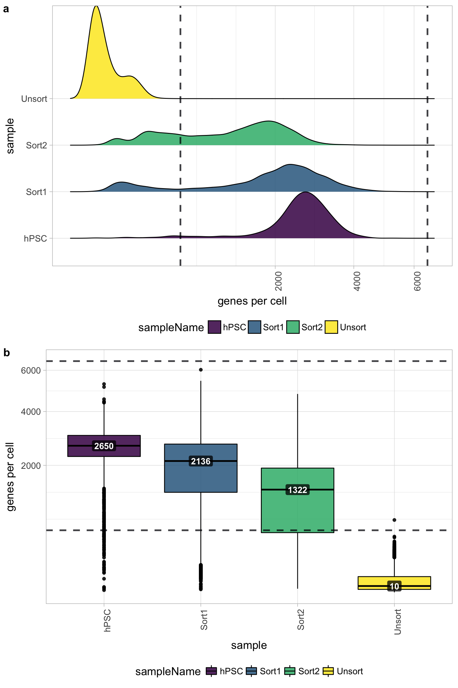
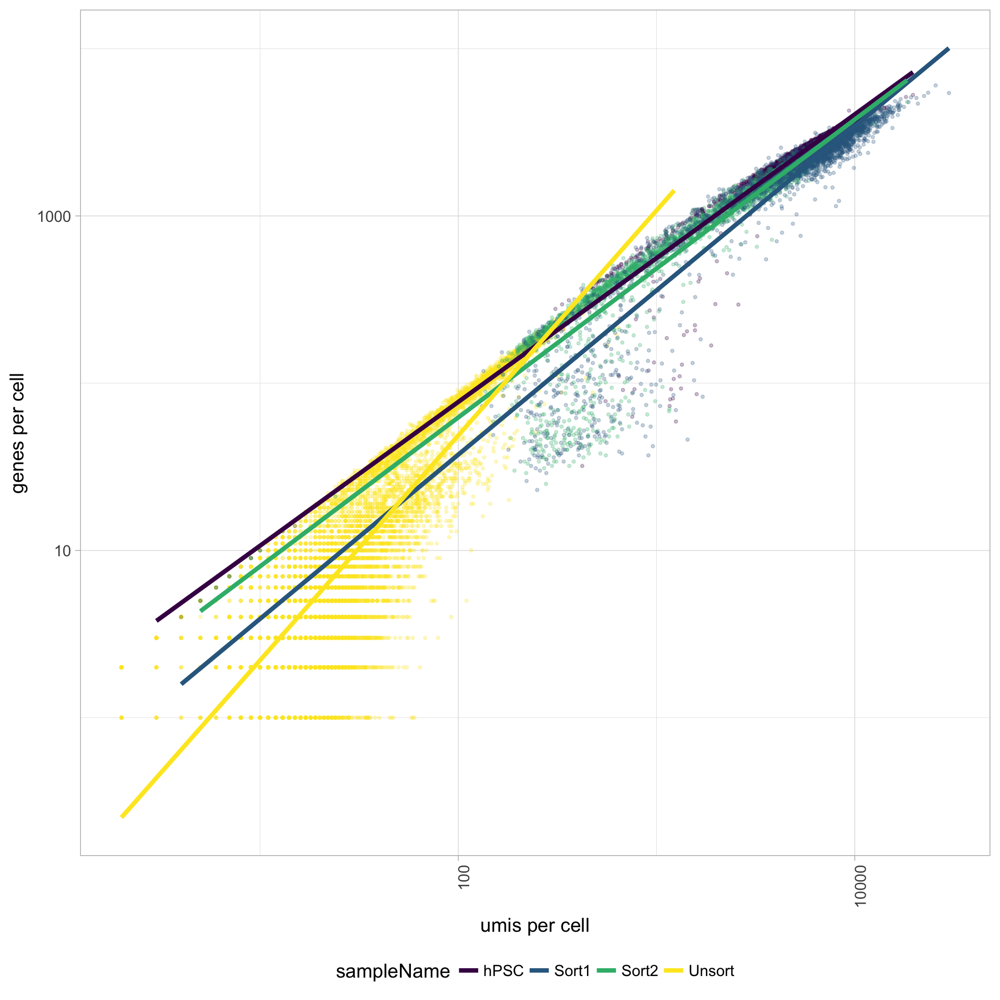

Construct quality control metrics and visually evaluate the quality of the data
Apply appropriate filters to remove low quality cells
Each step of this workflow has its own goals and challenges. For QC of our raw count data, they include:
Goals:
To filter the data to only include true cells that are of high quality, so that when we cluster our cells it is easier to identify distinct cell type populations
To identify any failed samples and either try to salvage the data or remove from analysis, in addition to, trying to understand why the sample failed
Challenges:
Delineating cells that are poor quality from less complex cells
Choosing appropriate thresholds for filtering, so as to keep high quality cells without removing biologically relevant cell types
Recommendations:
Have a good idea of your expectations for the cell types to be present prior to performing the QC. For instance, do you expect to have low complexity cells or cells with higher levels of mitochondrial expression in your sample? If so, then we need to account for this biology when assessing the quality of our data.
18.1 计算质控指标 (Generating quality metrics)
When data is loaded into Seurat and the initial object is created, there is some basic metadata asssembled for each of the cells in the count matrix. To take a close look at this metadata, let’s view the data frame stored in the meta.data slot of our merged_seurat object:
An object of class Seurat
33538 features across 31444 samples within 1 assay
Active assay: RNA (33538 features, 0 variable features)
2 layers present: counts.ctrl_raw_feature_bc_matrix, counts.stim_raw_feature_bc_matrix
In order to create the appropriate plots for the quality control analysis, we need to calculate some additional metrics. These include:
number of genes detected per UMI (novelty score): this metric will give us an idea of the complexity of our dataset (more genes detected per UMI, more complex our data)
mitochondrial ratio: this metric will give us a percentage of cell reads originating from the mitochondrial genes
Novelty score
This value is quite easy to calculate, as we take the log10 of the number of genes detected per cell and the log10 of the number of UMIs per cell, then divide the log10 number of genes by the log10 number of UMIs. The novelty score and how it relates to complexity of the RNA species, is described in more detail later in this lesson.
# Add number of genes per UMI for each cell to metadatamerged_seurat$log10GenesPerUMI<-log10(merged_seurat$nFeature_RNA)/log10(merged_seurat$nCount_RNA)head(merged_seurat@meta.data)
Min. 1st Qu. Median Mean 3rd Qu. Max.
0.5490 0.8565 0.8739 0.8734 0.8907 0.9785
Mitochondrial Ratio
Seurat has a convenient function that allows us to calculate the proportion of transcripts mapping to mitochondrial genes. The PercentageFeatureSet() function takes in a pattern argument and searches through all gene identifiers in the dataset for that pattern. Since we are looking for mitochondrial genes, we are searching any gene identifiers that begin with the pattern “MT-”. For each cell, the function takes the sum of counts across all genes (features) belonging to the “Mt-” set, and then divides by the count sum for all genes (features). This value is multiplied by 100 to obtain a percentage value.
Note
For our analysis, rather than using a percentage value we would prefer to work with the ratio value. As such, we will reverse that last step performed by the function by taking the output value and dividing by 100.
The pattern provided (“^MT-”) works for human gene names. You may need to adjust the pattern argument depending on your organism of interest. Additionally, if you weren’t using gene names as the gene ID then this function wouldn’t work as we have used it above as the pattern will not suffice. Since there are caveats to using this function, it is advisable to manually compute this metric. If you are interested, we have code available to compute this metric on your own.
Additional metadata columns
We are a now all set with quality metrics required for assessing our data. However, we would like to include some additional information that would be useful to have in our metadata including cell IDs and condition information.
When we added columns of information to our metadata file above, we simply added it directly to the metadata slot in the Seurat object using the $ operator.
We’ll add a new column for cell identifiers. This information is currently located in the row names of our metadata dataframe. We will keep the rownames as is and duplicate it into a new column called cells:
# Add cell IDs to metadatamerged_seurat$cells<-rownames(merged_seurat@meta.data)
You should see that each cell ID has a ctrl_ or stim_ prefix as we had specified when we merged the Seurat objects. We can use this prefix to create a new column indicating which condition each cell is classfied under. We will call this column sample:
Now you are all setup with the metrics you need to assess the quality of your data! Your final metadata table will have rows that correspond to each cell, and columns with information about those cells.
Now that we have generated the various metrics to assess, we can explore them with visualizations. We will assess various metrics and then decide on which cells are low quality and should be removed from the analysis:
Cell counts
UMI counts per cell
Genes detected per cell
Complexity (novelty score)
Mitochondrial counts ratio
Why aren’t we checking for doublets?
In single-cell RNA sequencing experiments, doublets are generated from two cells. They typically arise due to errors in cell sorting or capture, especially in droplet-based protocols involving thousands of cells. Doublets are obviously undesirable when the aim is to characterize populations at the single-cell level. In particular, they can incorrectly suggest the existence of intermediate populations or transitory states that do not actually exist. Thus, it is desirable to remove doublet libraries so that they do not compromise interpretation of the results.
Why aren’t we checking for doublets? Many workflows use maximum thresholds for UMIs or genes, with the idea that a much higher number of reads or genes detected indicate multiple cells. While this rationale seems to be intuitive, it is not accurate. Also, many of the tools used to detect doublets tend to get rid of cells with intermediate or continuous phenotypes, although they may work well on datasets with very discrete cell types. Scrublet is a popular tool for doublet detection, but we haven’t adequately benchmarked it yet. Currently, we recommend not including any thresholds at this point in time. When we have identified markers for each of the clusters, we suggest exploring the markers to determine whether the markers apply to more than one cell type.
Cell counts
The cell counts are determined by the number of unique cellular barcodes detected. For this experiment, between 12,000 -13,000 cells are expected.
In an ideal world, you would expect the number of unique cellular barcodes to correpsond to the number of cells you loaded. However, this is not the case as capture rates of cells are only a proportion of what is loaded. For example, the inDrops cell capture efficiency is higher (70-80%) compared to 10X which is between 50-60%.
Note
The capture efficiency could appear much lower if the cell concentration used for library preparation was not accurate. Cell concentration should NOT be determined by FACS machine or Bioanalyzer (these tools are not accurate for concentration determination), instead use a hemocytometer or automated cell counter for calculation of cell concentration.
The cell numbers can also vary by protocol, producing cell numbers that are much higher than what we loaded. For example, during the inDrops protocol, the cellular barcodes are present in the hydrogels, which are encapsulated in the droplets with a single cell and lysis/reaction mixture. While each hydrogel should have a single cellular barcode associated with it, occasionally a hydrogel can have more than one cellular barcode. Similarly, with the 10X protocol there is a chance of obtaining only a barcoded bead in the emulsion droplet (GEM) and no actual cell. Both of these, in addition to the presence of dying cells can lead to a higher number of cellular barcodes than cells.
We see over 15,000 cells per sample, which is quite a bit more than the 12-13,000 expected. It is clear that we likely have some junk ‘cells’ present.
UMI counts (transcripts) per cell
The UMI counts per cell should generally be above 500, that is the low end of what we expect. If UMI counts are between 500-1000 counts, it is usable but the cells probably should have been sequenced more deeply.
We can see that majority of our cells in both samples have 1000 UMIs or greater, which is great.
Genes detected per cell
We have similar expectations for gene detection as for UMI detection, although it may be a bit lower than UMIs. For high quality data, the proportional histogram should contain a single large peak that represents cells that were encapsulated. If we see a small shoulder to the left of the major peak (not present in our data), or a bimodal distribution of the cells, that can indicate a couple of things:
It might be that there are a set of cells that failed for some reason.
It could also be that there are biologically different types of cells (i.e. quiescent cell populations, less complex cells of interest), and/or one type is much smaller than the other (i.e. cells with high counts may be cells that are larger in size).
Therefore, this threshold should be assessed with other metrics that we describe in this lesson.
We can evaluate each cell in terms of how complex the RNA species are by using a measure called the novelty score. The novelty score is computed by taking the ratio of nGenes over nUMI. If there are many captured transcripts (high nUMI) and a low number of genes detected in a cell, this likely means that you only captured a low number of genes and simply sequenced transcripts from those lower number of genes over and over again. These low complexity (low novelty) cells could represent a specific cell type (i.e. red blood cells which lack a typical transcriptome), or could be due to an artifact or contamination. Generally, we expect the novelty score to be above 0.80 for good quality cells.
# Visualize the overall complexity of the gene expression by visualizing the genes detected per UMI (novelty score)merged_seurat@meta.data%>%ggplot(aes(x =log10GenesPerUMI, color =sample, fill=sample))+geom_density(alpha =0.2)+theme_classic()+geom_vline(xintercept =0.8)

Mitochondrial counts ratio
This metric can identify whether there is a large amount of mitochondrial contamination from dead or dying cells. We define poor quality samples for mitochondrial counts as cells which surpass the 0.2 mitochondrial ratio mark, unless of course you are expecting this in your sample.
# Visualize the distribution of mitochondrial gene expression detected per cellmerged_seurat@meta.data%>%ggplot(aes(color =sample, x =mitoRatio, fill =sample))+geom_density(alpha =0.2)+scale_x_log10()+theme_classic()+geom_vline(xintercept =0.2)

Note
Reads per cell is another metric that can be useful to explore; however, the workflow used would need to save this information to assess. Generally, with this metric you hope to see all of the samples with peaks in relatively the same location between 10,000 and 100,000 reads per cell.
Visualize QC metrics as a violin plot:
VlnPlot(merged_seurat, features =c("nFeature_RNA", "nCount_RNA", "log10GenesPerUMI", "mitoRatio"), ncol =4, pt.size =0)
Joint filtering effects
Considering any of these QC metrics in isolation can lead to misinterpretation of cellular signals. For example, cells with a comparatively high fraction of mitochondrial counts may be involved in respiratory processes and may be cells that you would like to keep. Likewise, other metrics can have other biological interpretations. A general rule of thumb when performing QC is to set thresholds for individual metrics to be as permissive as possible, and always consider the joint effects of these metrics. In this way, you reduce the risk of filtering out any viable cell populations.
Two metrics that are often evaluated together are the number of UMIs and the number of genes detected per cell. Here, we have plotted the number of genes versus the number of UMIs coloured by the fraction of mitochondrial reads. Jointly visualizing the count and gene thresholds and additionally overlaying the mitochondrial fraction, gives a summarized persepective of the quality per cell.
Good cells will generally exhibit both higher number of genes per cell and higher numbers of UMIs (upper right quadrant of the plot). Cells that are poor quality are likely to have low genes and UMIs per cell, and correspond to the data points in the bottom left quadrant of the plot. With this plot we also evaluate the slope of the line, and any scatter of data points in the bottom right hand quadrant of the plot. These cells have a high number of UMIs but only a few number of genes. These could be dying cells, but also could represent a population of a low complexity celltype (i.e red blood cells).
Mitochondrial read fractions are only high in particularly low count cells with few detected genes (darker colored data points). This could be indicative of damaged/dying cells whose cytoplasmic mRNA has leaked out through a broken membrane, and thus, only mRNA located in the mitochondria is still conserved. We can see from the plot, that these cells are filtered out by our count and gene number thresholds.
18.3 细胞/基因过滤 (Filtering)
Cell-level filtering
Now that we have visualized the various metrics, we can decide on the thresholds to apply which will result in the removal of low quality cells. Often the recommendations mentioned earlier are a rough guideline, and the specific experiment needs to inform the exact thresholds chosen. We will use the following thresholds:
nUMI > 500
nGene > 250
log10GenesPerUMI > 0.8
mitoRatio < 0.2
To filter, we wil go back to our Seurat object and use the subset() function:
# Filter out low quality cells using selected thresholds - these will change with experimentfiltered_seurat<-subset(x =merged_seurat, subset=(nCount_RNA>=500)&(nFeature_RNA>=250)&(log10GenesPerUMI>0.80)&(mitoRatio<0.20))paste0("质控过滤掉了", ncol(merged_seurat)-ncol(filtered_seurat), "个细胞")
[1] "质控过滤掉了1815个细胞"
Gene-level filtering
Within our data we will have many genes with zero counts. These genes can dramatically reduce the average expression for a cell and so we will remove them from our data. We will start by identifying which genes have a zero count in each cell:
Now, we will perform some filtering by prevalence. If a gene is only expressed in a handful of cells, it is not particularly meaningful as it still brings down the averages for all other cells it is not expressed in. For our data we choose to keep only genes which are expressed in 10 or more cells. By using this filter, genes which have zero counts in all cells will effectively be removed.
# Only keeping those genes expressed in more than 10 cellskeep_genes<-rownames(filtered_seurat)[rowSums(counts>0)>=10]paste0("过滤掉了", nrow(filtered_seurat)-length(keep_genes), "个基因；剩余", length(keep_genes), "个基因")
[1] "过滤掉了19473个基因；剩余14065个基因"
# 过滤基因filtered_seurat<-subset(filtered_seurat, features =keep_genes)filtered_seurat
An object of class Seurat
14065 features across 29629 samples within 1 assay
Active assay: RNA (14065 features, 0 variable features)
1 layer present: counts
18.4 重新质量评价 (Re-assess QC metrics)
After performing the filtering, it’s recommended to look back over the metrics to make sure that your data matches your expectations and is good for downstream analysis.
1. Report the number of cells left for each sample, and comment on whether the number of cells removed is high or low. Can you give reasons why this number is still not ~12K (which is how many cells were loaded for the experiment)?
There are just under 15K cells left for both the control and stim cells. The number of cells removed is reasonably low.
While it would be ideal to have 12K cells, we do not expect that due to the lower capture efficiency (i.e. the number of actual cells encapsulated within droplets containing barcodes) of these technologies. If we still see higher than expected numbers of cells after filtering, this means we could afford to filter more stringently (but we don’t necessarily have to).
2. After filtering for nGene per cell, you should still observe a small shoulder to the right of the main peak. What might this shoulder represent?
This peak could represent a biologically distinct population of cells. It could be a set a of cells that share some properties and as a consequence exhibit more diversity in its transcriptome (with the larger number of genes detected).
3. When plotting the nGene against nUMI do you observe any data points in the bottom right quadrant of the plot? What can you say about these cells that have been removed?
The cells that were removed were those with high nUMI but low numbers of genes detected. These cells had many captured transcripts but represent only a small number of genes. These low complexity cells could represent a specific cell type (i.e. red blood cells which lack a typical transcriptome), or could be due to some other strange artifact or contamination.
18.5 Saving filtered cells
Based on these QC metrics we would identify any failed samples and move forward with our filtered cells. Often we iterate through the QC metrics using different filtering criteria; it is not necessarily a linear process. When satisfied with the filtering criteria, we would save our filtered cell object for clustering and marker identification.
The data we are working with is pretty good quality. If you are interested in knowing what ‘bad’ data might look like when performing QC, we have some materials here where we explore similar QC metrics of a poor quality sample.
Cell counts
The cell counts are determined by the number of unique cellular barcodes detected. During the droplet-based protocols, the cellular barcodes are present in the hydrogels, which are encapsulated in the droplets with a single cell and lysis/reaction mixture. While each hydrogel should have a single cellular barcode associated with it, occasionally a hydrogel can have more than one cellular barcode. We often see all possible combinations of cellular barcodes at a low level, leading to a higher number of cellular barcodes than cells.
You expect the number of unique cellular barcodes to be often greater than the number of seuqenced cells due to some hydrogels having more than one cellular barcode. The yellow sample below seems to have at least double the number of cellular barcodes as the other samples.
UMI counts per cell
The number of UMIs per cell tends to be very low for the Unsorted sample (yellow). The other samples have good numbers of UMIs per cell, indicating a problem only with the Unsorted sample. Using this cutoff, we will lose the majority of the Unsorted cells.
Genes detected per cell
Seeing gene detection in the range of 500-5000 is normal for inDrop/10X analyses. However, expectations can vary depending on the complexity of the cells expected in the experiment. Similar expectations for gene detection as for UMI detection.
All samples other than the Unsorted sample have a good number of genes detected (with medians between 1,000 - 3,000 genes), which correspond to the numbers of UMIs per cell for each sample. However, the Unsorted sample has a very low median number of genes per cell, indicating a sample failure.

UMIs vs. genes detected
Poor quality cells are likely to have low genes and UMIs per cell. Therefore, a poor sample is likely to have cells in the lower left of the graph. Good cells should exhibit both higher number of genes per cell and higher numbers of UMIs. We also expect similar lines with similar slopes for all samples.
The Unsorted sample has many cells with few UMIs and low number of genes per cell. The other samples look fine.

Mitochondrial counts ratio
Poor quality samples for mitochondrial counts would have larger peaks above the 0.1 mitochondrial ratio mark, unless it is expected based on sample type.
There was just a very low number of genes detected for the Unsorted sample, so mitochondrial expression appears higher mainly due to this fact. The poor quality of the Unsorted sample does not appear to be due to dead or dying cells. The other samples have little mitochondrial expression, although hPSC sample has a bit more than the Sorted samples. Since the hPSC sample was expected to have cell types with higher levels of mitochondrial expression, it may have been advisable to not to use a threshold for this metric.
Novelty
We can see the samples where we sequenced each cell less have a higher overall novelty, that is because we have not started saturated the sequencing for any given gene for these samples. Outlier cells in these samples might be cells that we have a less complex RNA species than other cells. Sometimes we can detect contamination with low complexity cell types like red blood cells via this metric.
All of the samples look fine for complexity, except for the Unsorted sample, so it is unlikely that there is contamination with low complexity cell types in these of the samples. The Unsorted sample has a larger shoulder than desired, but is not bad by this metric.
Filtered results
One main plot to look at to determine the success of the filtering criteria is the number of cell counts. The number of cells to expect depends on the library preparation method, but for inDrops we see ~80% or less of the total sequenced cells per sample and for 10X it is often ~50% or less.
In addition, it is a good idea to explore all of the quality plots for the filtered data. All plots should be much improved for the number of reads per cell, genes detected, UMIs per cell, mitochondrial ratio, and novelty. Since the Unsorted sample was a poor quality sample, the filter will remove a large number of the cells for this sample; in this case all cells except 1 were filtered out.
# 质控 {#sec-qc}**Learning Objectives:**- Construct quality control metrics and visually evaluate the quality of the data- Apply appropriate filters to remove low quality cells{width="580"}------------------------------------------------------------------------Each step of this workflow has its own goals and challenges. For QC of our raw count data, they include:**Goals:**- To filter the data to only include true cells that are of high quality, so that when we cluster our cells it is easier to identify distinct cell type populations- To identify any failed samples and either try to salvage the data or remove from analysis, in addition to, trying to understand why the sample failed**Challenges:**- Delineating cells that are poor quality from less complex cells- Choosing appropriate thresholds for filtering, so as to **keep high quality cells without removing biologically relevant cell types****Recommendations:**- Have a good idea of your expectations for the **cell types to be present** prior to performing the QC. For instance, do you expect to have low complexity cells or cells with higher levels of mitochondrial expression in your sample? If so, then we need to account for this biology when assessing the quality of our data.------------------------------------------------------------------------## 计算质控指标 (Generating quality metrics)When data is loaded into Seurat and the initial object is created, there is some basic metadata asssembled for each of the cells in the count matrix. To take a close look at this metadata, let's view the data frame stored in the `meta.data` slot of our `merged_seurat` object:```{r}library(Seurat)merged_seurat <-readRDS("output/merged_seurat.rds")merged_seurathead(merged_seurat@meta.data)```In order to create the appropriate plots for the quality control analysis, we need to calculate some additional metrics. These include:- **number of genes detected per UMI (**novelty score**):** this metric will give us an idea of the complexity of our dataset (more genes detected per UMI, more complex our data)- **mitochondrial ratio:** this metric will give us a percentage of cell reads originating from the mitochondrial genes### Novelty scoreThis value is quite easy to calculate, as we take the log10 of the number of genes detected per cell and the log10 of the number of UMIs per cell, then divide the log10 number of genes by the log10 number of UMIs. The novelty score and how it relates to complexity of the RNA species, is described in more detail later in this lesson.```{r}# Add number of genes per UMI for each cell to metadatamerged_seurat$log10GenesPerUMI <-log10(merged_seurat$nFeature_RNA) /log10(merged_seurat$nCount_RNA)head(merged_seurat@meta.data)summary(merged_seurat$log10GenesPerUMI)```### Mitochondrial RatioSeurat has a convenient function that allows us to calculate the **proportion of transcripts mapping to mitochondrial genes**. The `PercentageFeatureSet()` function takes in a `pattern` argument and searches through all gene identifiers in the dataset for that pattern. Since we are looking for mitochondrial genes, we are searching any gene identifiers that begin with the pattern **"MT-"**. For each cell, the function takes the sum of counts across all genes (features) belonging to the "Mt-" set, and then divides by the count sum for all genes (features). This value is multiplied by 100 to obtain a percentage value.::: callout-noteFor our analysis, rather than using a percentage value we would prefer to work with the ratio value. As such, we will reverse that last step performed by the function by taking the output value and dividing by 100.:::```{r}# Compute percent mito ratiomerged_seurat$mitoRatio <-PercentageFeatureSet(object = merged_seurat, pattern ="^MT-")merged_seurat$mitoRatio <- merged_seurat@meta.data$mitoRatio /100summary(merged_seurat$mitoRatio)boxplot(merged_seurat$mitoRatio)```::: callout-noteThe pattern provided ("\^MT-") works for human gene names. You may need to adjust the pattern argument depending on your organism of interest. Additionally, if you weren't using gene names as the gene ID then this function wouldn't work as we have used it above as the pattern will not suffice. Since there are caveats to using this function, it is advisable to manually compute this metric. If you are interested, we have [code available to compute this metric on your own](https://github.com/hbctraining/scRNA-seq/blob/master/lessons/mitoRatio.md).:::### Additional metadata columnsWe are a now all set with quality metrics required for assessing our data. However, we would like to include some additional information that would be useful to have in our metadata including **cell IDs and condition information**.When we added columns of information to our metadata file above, we simply added it directly to the metadata slot in the Seurat object using the `$` operator.We'll add a new column for **cell identifiers**. This information is currently located in the row names of our metadata dataframe. We will keep the rownames as is and duplicate it into a new column called `cells`:```{r}# Add cell IDs to metadatamerged_seurat$cells <-rownames(merged_seurat@meta.data)```You should see that each cell ID has a `ctrl_` or `stim_` prefix as we had specified when we merged the Seurat objects. We can use this prefix to create a new column indicating **which condition** each cell is classfied under. We will call this column `sample`:```{r}# Create sample columnlibrary(stringr)merged_seurat$sample <-str_split(rownames(merged_seurat@meta.data),"_",simplify =TRUE)table(merged_seurat$sample)head(merged_seurat@meta.data)```Now you are all setup with the metrics you need to assess the quality of your data! Your final metadata table will have rows that correspond to each cell, and columns with information about those cells.```{r}# 保存saveRDS(merged_seurat, file ="output/merged_filtered_seurat.rds")```## 质量评价 (Assessing the quality metrics)Now that we have generated the various metrics to assess, we can explore them with **visualizations**. We will assess various metrics and then decide on which cells are low quality and should be removed from the analysis:- Cell counts- UMI counts per cell- Genes detected per cell- Complexity (novelty score)- Mitochondrial counts ratio::: {.callout-tip collapse="true"}###### Why aren't we checking for doublets?In single-cell RNA sequencing experiments, doublets are generated from two cells. They typically arise due to errors in cell sorting or capture, especially in droplet-based protocols involving thousands of cells. Doublets are obviously undesirable when the aim is to characterize populations at the single-cell level. In particular, they can incorrectly suggest the existence of intermediate populations or transitory states that do not actually exist. Thus, it is desirable to remove doublet libraries so that they do not compromise interpretation of the results.**Why aren't we checking for doublets?** Many workflows use maximum thresholds for UMIs or genes, with the idea that a much higher number of reads or genes detected indicate multiple cells. While this rationale seems to be intuitive, it is not accurate. Also, many of the tools used to detect doublets tend to get rid of cells with intermediate or continuous phenotypes, although they may work well on datasets with very discrete cell types. [Scrublet](https://github.com/AllonKleinLab/scrublet) is a popular tool for doublet detection, but we haven't adequately benchmarked it yet. Currently, we recommend not including any thresholds at this point in time. When we have identified markers for each of the clusters, we suggest exploring the markers to determine whether the markers apply to more than one cell type.:::### Cell countsThe cell counts are determined by the number of unique cellular barcodes detected. For this experiment, between 12,000 -13,000 cells are expected.In an ideal world, you would expect the number of unique cellular barcodes to correpsond to the number of cells you loaded. However, this is not the case as capture rates of cells are only a proportion of what is loaded. For example, the inDrops cell **capture efficiency** is higher (70-80%) compared to 10X which is between 50-60%.::: callout-noteThe capture efficiency could appear much lower if the cell concentration used for library preparation was not accurate. Cell concentration should NOT be determined by FACS machine or Bioanalyzer (these tools are not accurate for concentration determination), instead use a hemocytometer or automated cell counter for calculation of cell concentration.:::The cell numbers can also vary by protocol, **producing cell numbers that are much higher than what we loaded**. For example, during the inDrops protocol, the cellular barcodes are present in the hydrogels, which are encapsulated in the droplets with a single cell and lysis/reaction mixture. While each hydrogel should have a single cellular barcode associated with it, occasionally a hydrogel can have more than one cellular barcode. Similarly, with the 10X protocol there is a chance of obtaining only a barcoded bead in the emulsion droplet (GEM) and no actual cell. Both of these, in addition to the presence of dying cells can lead to a higher number of cellular barcodes than cells.```{r}# Visualize the number of cell counts per samplelibrary(ggplot2)merged_seurat@meta.data %>%ggplot(aes(x = sample, fill = sample)) +geom_bar() +theme_classic() +theme(axis.text.x =element_text(angle =45, vjust =1, hjust =1)) +theme(plot.title =element_text(hjust =0.5, face ="bold")) +ggtitle("NCells")```We see over 15,000 cells per sample, which is quite a bit more than the 12-13,000 expected. **It is clear that we likely have some junk 'cells' present.**### UMI counts (transcripts) per cell**The UMI counts per cell should generally be above 500**, that is the low end of what we expect. If UMI counts are between 500-1000 counts, it is usable but the cells probably should have been sequenced more deeply.```{r}# Visualize the number UMIs/transcripts per cellmerged_seurat@meta.data %>%ggplot(aes(color = sample, x = nCount_RNA, fill = sample)) +geom_density(alpha =0.2) +scale_x_log10() +theme_classic() +ylab("Cell density") +geom_vline(xintercept =500)```We can see that majority of our cells in both samples have 1000 UMIs or greater, which is great.### Genes detected per cellWe have similar expectations for gene detection as for UMI detection, although it may be a bit lower than UMIs. For high quality data, the proportional histogram should contain **a single large peak** that represents cells that were encapsulated. If we see a **small shoulder** to the left of the major peak (not present in our data), or a bimodal distribution of the cells, that can indicate a couple of things:- It might be that there are a set of **cells that failed** for some reason.- It could also be that there are **biologically different types of cells** (i.e. quiescent cell populations, less complex cells of interest), and/or one type is much smaller than the other (i.e. cells with high counts may be cells that are larger in size).Therefore, this threshold should be assessed with other metrics that we describe in this lesson.```{r}# Visualize the distribution of genes detected per cell via histogrammerged_seurat@meta.data %>%ggplot(aes(color = sample, x = nFeature_RNA, fill= sample)) +geom_density(alpha =0.2) +theme_classic() +scale_x_log10() +geom_vline(xintercept =250)```### ComplexityWe can evaluate each cell in terms of how complex the RNA species are by using a measure called the **novelty score**. The novelty score is computed by taking the **ratio of nGenes over nUMI.** If there are many captured transcripts (high nUMI) and a low number of genes detected in a cell, this likely means that you only captured a low number of genes and simply sequenced transcripts from those lower number of genes over and over again. These **low complexity (low novelty)** cells could represent a specific cell type (i.e. **red blood cells** which lack a typical transcriptome), or could be due to an artifact or contamination. Generally, we expect the novelty score to be **above 0.80** for good quality cells.```{r}# Visualize the overall complexity of the gene expression by visualizing the genes detected per UMI (novelty score)merged_seurat@meta.data %>%ggplot(aes(x = log10GenesPerUMI, color = sample, fill=sample)) +geom_density(alpha =0.2) +theme_classic() +geom_vline(xintercept =0.8)```### Mitochondrial counts ratioThis metric can identify whether there is a large amount of mitochondrial contamination from dead or dying cells. We define poor quality samples for mitochondrial counts as cells which surpass the **0.2** mitochondrial ratio mark, unless of course you are expecting this in your sample.```{r}# Visualize the distribution of mitochondrial gene expression detected per cellmerged_seurat@meta.data %>%ggplot(aes(color = sample, x = mitoRatio, fill = sample)) +geom_density(alpha =0.2) +scale_x_log10() +theme_classic() +geom_vline(xintercept =0.2)```::: callout-note**Reads per cell** is another metric that can be useful to explore; however, the workflow used would need to save this information to assess. Generally, with this metric you hope to see all of the samples with peaks in relatively the same location between 10,000 and 100,000 reads per cell.:::Visualize QC metrics as a violin plot:```{r}#| fig-width: 10VlnPlot(merged_seurat, features =c("nFeature_RNA", "nCount_RNA", "log10GenesPerUMI", "mitoRatio"), ncol =4,pt.size =0)```### Joint filtering effectsConsidering any of these QC metrics in isolation can lead to misinterpretation of cellular signals. For example, cells with a comparatively high fraction of mitochondrial counts may be involved in respiratory processes and may be cells that you would like to keep. Likewise, other metrics can have other biological interpretations. A general rule of thumb when performing QC is to **set thresholds for individual metrics to be as permissive as possible, and always consider the joint effects** of these metrics. In this way, you reduce the risk of filtering out any viable cell populations.Two metrics that are often evaluated together are the number of UMIs and the number of genes detected per cell. Here, we have plotted the **number of genes versus the number of UMIs coloured by the fraction of mitochondrial reads**. Jointly visualizing the count and gene thresholds and additionally overlaying the mitochondrial fraction, gives a summarized persepective of the quality per cell.```{r}# Visualize the correlation between genes detected and number of UMIs and determine whether strong presence of cells with low numbers of genes/UMIsmerged_seurat@meta.data %>%ggplot(aes(x = nCount_RNA, y = nFeature_RNA, color = mitoRatio)) +geom_point() +scale_colour_gradient(low ="gray90", high ="black") +stat_smooth(method = lm) +scale_x_log10() +scale_y_log10() +theme_classic() +geom_vline(xintercept =500) +geom_hline(yintercept =250) +facet_wrap(~sample)```Good cells will generally exhibit both higher number of genes per cell and higher numbers of UMIs (**upper right quadrant of the plot**). Cells that are poor quality are likely to have low genes and UMIs per cell, and correspond to the data points in the bottom left quadrant of the plot. With this plot we also evaluate the slope of the line, and any scatter of data points in the **bottom right hand quadrant** of the plot. These cells have a high number of UMIs but only a few number of genes. These could be **dying cells**, but also could represent a population of a **low complexity celltype (i.e red blood cells)**.**Mitochondrial read fractions are only high in particularly low count cells with few detected genes** (darker colored data points). This could be indicative of damaged/dying cells whose cytoplasmic mRNA has leaked out through a broken membrane, and thus, only mRNA located in the mitochondria is still conserved. We can see from the plot, that these cells are filtered out by our count and gene number thresholds.## 细胞/基因过滤 (Filtering)### Cell-level filteringNow that we have visualized the various metrics, we can decide on the thresholds to apply which will result in the removal of low quality cells. Often the recommendations mentioned earlier are a rough guideline, and the specific experiment needs to inform the exact thresholds chosen. We will use the following thresholds:- nUMI \> 500- nGene \> 250- log10GenesPerUMI \> 0.8- mitoRatio \< 0.2To filter, we wil go back to our Seurat object and use the `subset()` function:```{r}# Filter out low quality cells using selected thresholds - these will change with experimentfiltered_seurat <-subset(x = merged_seurat, subset= (nCount_RNA >=500) & (nFeature_RNA >=250) & (log10GenesPerUMI >0.80) & (mitoRatio <0.20))paste0("质控过滤掉了", ncol(merged_seurat) -ncol(filtered_seurat), "个细胞")```### Gene-level filteringWithin our data we will have many genes with zero counts. These genes can dramatically reduce the average expression for a cell and so we will remove them from our data. We will start by identifying which genes have a zero count in each cell:```{r}Layers(filtered_seurat)# 在seurat V5中不同样本的数据被放到不同的layer中，为了方便后面计数基因，所以先将layer合并filtered_seurat <-JoinLayers(filtered_seurat)Layers(filtered_seurat)# Extract countscounts <- filtered_seurat@assays[["RNA"]]@layers[["counts"]]```Now, we will perform some filtering by prevalence. If a gene is only expressed in a handful of cells, it is not particularly meaningful as it still brings down the averages for all other cells it is not expressed in. For our data we choose to keep only **genes which are expressed in 10 or more cells.** By using this filter, genes which have zero counts in all cells will effectively be removed.```{r}# Only keeping those genes expressed in more than 10 cellskeep_genes <-rownames(filtered_seurat)[rowSums(counts >0) >=10]paste0("过滤掉了", nrow(filtered_seurat) -length(keep_genes), "个基因；剩余", length(keep_genes), "个基因")# 过滤基因filtered_seurat <-subset(filtered_seurat, features = keep_genes)filtered_seurat```## 重新质量评价 (Re-assess QC metrics)After performing the filtering, it's recommended to look back over the metrics to make sure that your data matches your expectations and is good for downstream analysis.```{r}#| layout-ncol: 3# Cell countsfiltered_seurat@meta.data %>%ggplot(aes(x = sample, fill = sample)) +geom_bar() +theme_classic() +theme(axis.text.x =element_text(angle =45, vjust =1, hjust =1)) +theme(plot.title =element_text(hjust =0.5, face ="bold")) +ggtitle("NCells")# UMI countsfiltered_seurat@meta.data %>%ggplot(aes(color = sample, x = nCount_RNA, fill = sample)) +geom_density(alpha =0.2) +scale_x_log10() +theme_classic() +ylab("Cell density") +geom_vline(xintercept =500)# Genes detectedfiltered_seurat@meta.data %>%ggplot(aes(color = sample, x = nFeature_RNA, fill= sample)) +geom_density(alpha =0.2) +theme_classic() +scale_x_log10() +geom_vline(xintercept =250)# UMIs vs genesfiltered_seurat@meta.data %>%ggplot(aes(x = log10GenesPerUMI, color = sample, fill=sample)) +geom_density(alpha =0.2) +theme_classic() +geom_vline(xintercept =0.8)# Mitochondrial counts ratiofiltered_seurat@meta.data %>%ggplot(aes(color = sample, x = mitoRatio, fill = sample)) +geom_density(alpha =0.2) +scale_x_log10() +theme_classic() +geom_vline(xintercept =0.2)# Noveltyfiltered_seurat@meta.data %>%ggplot(aes(x = log10GenesPerUMI, color = sample, fill=sample)) +geom_density(alpha =0.2) +theme_classic() +geom_vline(xintercept =0.8)# Joint filtering effectsfiltered_seurat@meta.data %>%ggplot(aes(x = nCount_RNA, y = nFeature_RNA, color = mitoRatio)) +geom_point() +scale_colour_gradient(low ="gray90", high ="black") +stat_smooth(method = lm) +scale_x_log10() +scale_y_log10() +theme_classic() +geom_vline(xintercept =500) +geom_hline(yintercept =250) +facet_wrap(~sample)```::: {.callout-note collapse="true"}###### 问题：**1. Report the number of cells left for each sample, and comment on whether the number of cells removed is high or low. Can you give reasons why this number is still not \~12K (which is how many cells were loaded for the experiment)?**There are just under 15K cells left for both the control and stim cells. The number of cells removed is reasonably low.While it would be ideal to have 12K cells, we do not expect that due to the lower capture efficiency (i.e. the number of actual cells encapsulated within droplets containing barcodes) of these technologies. If we still see higher than expected numbers of cells after filtering, this means we could afford to filter more stringently (but we don't necessarily have to).**2. After filtering for nGene per cell, you should still observe a small shoulder to the right of the main peak. What might this shoulder represent?**This peak could represent a **biologically distinct population of cells**. It could be a set a of cells that share some properties and as a consequence exhibit more diversity in its transcriptome (with the larger number of genes detected).**3. When plotting the nGene against nUMI do you observe any data points in the bottom right quadrant of the plot? What can you say about these cells that have been removed?**The cells that were removed were those with **high nUMI but low numbers of genes** detected. These cells had many captured transcripts but represent only a small number of genes. These low complexity cells could represent a specific cell type (i.e. red blood cells which lack a typical transcriptome), or could be due to some other strange artifact or contamination.:::------------------------------------------------------------------------## Saving filtered cellsBased on these QC metrics we would identify any failed samples and move forward with our filtered cells. Often we iterate through the QC metrics using different filtering criteria; it is not necessarily a linear process. When satisfied with the filtering criteria, we would save our filtered cell object for clustering and marker identification.```{r}saveRDS(filtered_seurat, file="output/seurat_filtered.rds")```------------------------------------------------------------------------## Exploring a Poor Quality SampleThe data we are working with is pretty good quality. If you are interested in knowing what 'bad' data might look like when performing QC, we have some materials here where we explore similar QC metrics of a poor quality sample.### Cell countsThe cell counts are determined by the number of unique cellular barcodes detected. During the droplet-based protocols, the cellular barcodes are present in the hydrogels, which are encapsulated in the droplets with a single cell and lysis/reaction mixture. While each hydrogel should have a single cellular barcode associated with it, occasionally a hydrogel can have more than one cellular barcode. We often see all possible combinations of cellular barcodes at a low level, leading to a **higher number of cellular barcodes than cells**.You expect the number of unique cellular barcodes to be often greater than the number of seuqenced cells due to some hydrogels having more than one cellular barcode. The yellow sample below seems to have at least double the number of cellular barcodes as the other samples.{width="552"}### UMI counts per cellThe number of UMIs per cell tends to be very low for the Unsorted sample (yellow). The other samples have good numbers of UMIs per cell, indicating a problem only with the Unsorted sample. Using this cutoff, we will lose the majority of the Unsorted cells.{width="549"}### Genes detected per cellSeeing gene detection in the range of **500-5000** is normal for inDrop/10X analyses. However, expectations can vary depending on the complexity of the cells expected in the experiment. Similar expectations for gene detection as for UMI detection.All samples other than the Unsorted sample have a good number of genes detected (with medians between 1,000 - 3,000 genes), which correspond to the numbers of UMIs per cell for each sample. However, the Unsorted sample has a very low median number of genes per cell, indicating a sample failure.{width="480"}### UMIs vs. genes detectedPoor quality cells are likely to have low genes and UMIs per cell. Therefore, a poor sample is likely to have cells in the lower left of the graph. Good cells should exhibit both higher number of genes per cell and higher numbers of UMIs. We also expect similar lines with similar slopes for all samples.The Unsorted sample has many cells with few UMIs and low number of genes per cell. The other samples look fine.{width="499"}### Mitochondrial counts ratioPoor quality samples for mitochondrial counts would have larger peaks above the 0.1 mitochondrial ratio mark, unless it is expected based on sample type.There was just a very low number of genes detected for the Unsorted sample, so mitochondrial expression appears higher mainly due to this fact. The poor quality of the Unsorted sample does not appear to be due to dead or dying cells. The other samples have little mitochondrial expression, although hPSC sample has a bit more than the Sorted samples. [Since the hPSC sample was expected to have cell types with higher levels of mitochondrial expression, it may have been advisable to not to use a threshold for this metric.]{.underline}{width="564"}### NoveltyWe can see the samples where we sequenced each cell less have a higher overall novelty, that is because we have not started saturated the sequencing for any given gene for these samples. Outlier cells in these samples might be cells that we have a less complex RNA species than other cells. Sometimes we can detect contamination with low complexity cell types like red blood cells via this metric.All of the samples look fine for complexity, except for the Unsorted sample, so it is unlikely that there is **contamination with low complexity cell types** in these of the samples. The Unsorted sample has a larger shoulder than desired, but is not bad by this metric.{width="509"}### Filtered resultsOne main plot to look at to determine the success of the filtering criteria is the number of cell counts. The number of cells to expect depends on the library preparation method, but **for inDrops we see \~80% or less of the total sequenced cells per sample and for 10X it is often \~50% or less**.{width="422"}In addition, it is a good idea to explore all of the quality plots for the filtered data. All plots should be much improved for the number of reads per cell, genes detected, UMIs per cell, mitochondrial ratio, and novelty. Since the `Unsorted` sample was a poor quality sample, the filter will remove a large number of the cells for this sample; in this case all cells except 1 were filtered out.------------------------------------------------------------------------::: {.callout-note collapse="true" icon="false"}## Session Info```{r}#| echo: falsesessionInfo()```:::